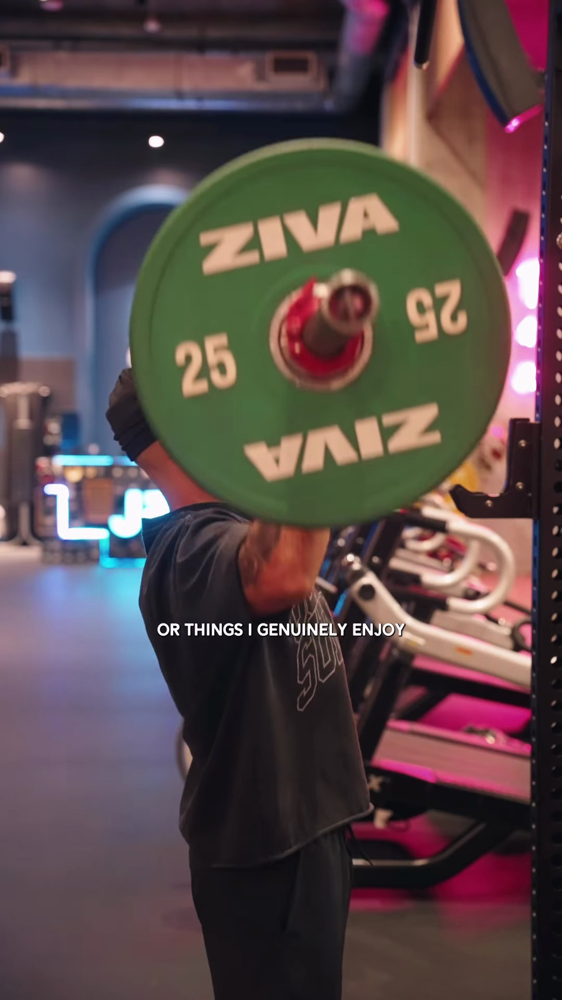

BƯỚC 1
Link Instagram Reels, TikTok, Shorts hoặc tệp video trong máy
Bạn Gửi Link Video Muốn Học Theo
🎬
Bạn chỉ cần nhắn link này cho Trợ lý AI:
https://www.instagram.com/reel/DcJoysIuLS9/
↓
BƯỚC 2
AI Bóc Tách Chi Tiết Từng Cảnh Quay
Toàn bộ 39 Cảnh QuayXem ảnh chụp từng giây, điểm làm tốt, điểm chưa tốt và cách áp dụng khi tự quay

CẢNH 01 • Giây 0.00 - 0.75
Góc Máy Trên Cao Chúc Xuống & Động Tác Gạt Tay Mở Màn
✅ Điểm hay: Góc máy từ trên cao tạo cảm giác lạ mắt, ánh sáng cửa sổ rọi vào làm sáng rõ căn phòng.
⚠️ Lưu ý: Gạt tay hơi nhanh khiến người xem khó kịp đọc chữ nhỏ ở góc trái.
💡 Cách làm theo:
Đưa tay tương tác thẳng vào camera trong 3 giây đầu để người xem không lướt qua.

CẢNH 02 • Giây 0.75 - 2.88
Nhìn Thẳng Camera & Đặt Chữ To Ở Phần Trên
✅ Điểm hay: Chữ in hoa to đập vào mắt ngay, người nói đứng chính giữa tạo sự tự tin.
⚠️ Lưu ý: Vệt nắng cắt ngang áo tạo bóng hơi gắt.
💡 Cách làm theo:
Đặt tiêu đề ở phần trên màn hình để không bị các nút Like, Comment của app che mất.

CẢNH 03 • Giây 2.88 - 4.50
Quay Rất Cận Bàn Tay Nắm Chặt Thanh Tạ
✅ Điểm hay: Hậu cảnh mờ mịt, nổi bật cơ bắp và độ nặng của bài tập, tạo cảm giác rất thật.
⚠️ Lưu ý: Đèn phòng tập hơi ngả màu hồng ở góc trên.
💡 Cách làm theo:
Quay lại chính việc bạn đang làm hàng ngày (tập gym, làm việc) thay vì diễn gượng gạo.

CẢNH 04 • Giây 4.50 - 6.63
Góc Máy Chính Giữa Kéo Xà Toàn Phòng Tập
✅ Điểm hay: Khung xà nằm cân đối chính giữa, tạo cảm giác không gian rộng lớn và kỷ luật.
⚠️ Lưu ý: Áo đen trùng màu với khung xà nên người hơi chìm vào hậu cảnh.
💡 Cách làm theo:
Đặt camera thẳng trục chính giữa căn phòng để tạo cảm giác không gian chỉn chu, đẹp mắt.

CẢNH 05 • Giây 6.63 - 7.67
Cắt Cảnh Đúng Vào Nhịp Trống Nhạc Nền
✅ Điểm hay: Đổi cảnh đúng lúc nhạc rơi giúp video có nhịp điệu dồn dập, xem rất cuốn.
⚠️ Lưu ý: Cảnh ngắn (1 giây) nên chỉ chiếu hành động chính.
💡 Cách làm theo:
Cắt đổi góc quay đúng vào tiếng trống của bài nhạc để video không bị nhàm chán.

CẢNH 06 • Giây 7.67 - 9.09
Quay Nghiêng Màn Hình Máy Tính Đang Dựng Phim
✅ Điểm hay: Góc quay nghiêng tạo cảm giác đang làm việc chăm chỉ và chân thật.
⚠️ Lưu ý: Cần dọn bớt đồ thừa trên bàn để khung hình gọn hơn.
💡 Cách làm theo:
Quay cảnh màn hình làm việc để người xem thấy quy trình thực tế của bạn.
📖
👁️ MỞ XEM FILE PDF ĐẦY ĐỦ (39 TRANG) ↗
Xem Toàn Bộ Bản Bóc Tách 39 Cảnh
Xem file PDF thực tế được tạo ra từ video này (39 trang đầy đủ hình ảnh và bài học)
📄 KẾT QUẢ ĐẦU RA
Nhận File PDF Đẹp Mắt, Mở Xem Mọi Lúc
Sau khi phân tích xong, bạn sẽ nhận được 1 file PDF trình bày rõ ràng từng cảnh quay. File tự động mở trên màn hình máy tính và tự lưu vào Google Drive để bạn xem trên điện thoại hoặc chia sẻ cho người khác.
Quy cách file:
File PDF Chuẩn A4
Đọc tốt trên điện thoại & iPad